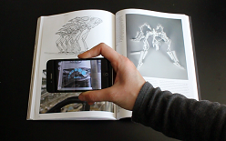

Realidad Aumentada: el futuro ya está aquí

La Realidad Aumentada es una tecnología emergente que permite disfrutar de experiencias en las que se añade contenido digital a nuestro mundo real, aumentando la percepción que tenemos del mismo.
Mediante esta tecnología, se puede incorporar contenido en forma de texto, imagen, audio, vídeo, modelos 3D e incluso información olfativa y táctil en la percepción del mundo real del usuario. Estos “aumentos” de la realidad pueden ayudar a mejorar el conocimiento del individuo y permitirle un mayor grado de comprensión lo que sucede a su alrededor.
Ronald Azuma, investigador del Nokia Research Center Hollywood, de California, ofreció una definición. Un sistema de Realidad Aumentada es aquel que cumple las siguientes características:
- Combina elementos reales y virtuales
- Es interactiva en tiempo real
- Se registra en 3D